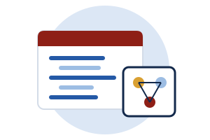

โครงงาน ENGSE304
ENGSE304 คือโครงงานแก้ปัญหาจริงของสถานประกอบการด้วยงานวิศวกรรมซอฟต์แวร์ หน้านี้บอกลำดับงาน สิ่งที่ต้องส่ง และเกณฑ์ผ่าน

คำอธิบายรายวิชาให้นำโจทย์ปัญหาจากสถานประกอบการ หรือจากงานที่นักศึกษาได้ฝึก มาศึกษาวิเคราะห์และประยุกต์ความรู้ทางวิชาชีพเพื่อหาวิธีแก้ปัญหาหรือพัฒนาวิธีการ ในรูปแบบโครงงาน โดยมีอาจารย์เป็นที่ปรึกษาและบุคลากรของสถานประกอบการมีส่วนร่วม
ลำดับงานโครงงาน
| สัปดาห์ | งาน | คะแนน | แบบฟอร์ม |
|---|---|---|---|
| 0 | สถานประกอบการเสนอโจทย์ 1–2 หัวข้อ และระบุที่ปรึกษาร่วม | SE-WIL01 | |
| 1–2 | พบที่ปรึกษาครั้งแรก ร่างข้อความปัญหากับที่ปรึกษาร่วม | ||
| 3 | ส่งข้อเสนอโครงงาน ที่ปรึกษาร่วมรับรองโจทย์ | SE-WIL05 | |
| 4 | ที่ปรึกษาและกรรมการ 2 คนพิจารณาข้อเสนอ (ออนไลน์ได้) แจ้งผลภายใน 1 สัปดาห์ | 10% | SE-WIL10 |
| 5–7 | ตรวจความก้าวหน้าพร้อมการนิเทศครั้งที่ 1 | SE-WIL06 | |
| 8 | ทบทวนความก้าวหน้า: SRS หรือ user stories และแบบจำลองการออกแบบ | 15% | SE-WIL10 |
| 10 | รายงานความก้าวหน้า พร้อม repository หรือเดโมบางส่วน | SE-WIL07 | |
| 11–12 | พัฒนาระบบ ทำแผนและรายงานการทดสอบ | ||
| 13 | ส่งร่างรายงานและรายงานการทดสอบ สถานประกอบการเริ่มตรวจเนื้อหาลับ | SE-WIL11 | |
| 14 | สาธิตผลงานต่อสถานประกอบการ ที่ปรึกษาร่วมประเมินคุณค่าผลงาน | 20% | SE-WIL09 |
| 15 | สอบปากเปล่าและสาธิต (อาจารย์อย่างน้อย 2 คนและผู้แทนสถานประกอบการ) ส่งรายงานฉบับสมบูรณ์ ให้คะแนนสิ่งประดิษฐ์ | 15% 15% 25% | SE-WIL10 |
ข้อเสนอโครงงานต้องมี
- ปัญหาที่สถานประกอบการรับรอง และเหตุผลว่าทำไมจึงเป็นปัญหาจริง
- ขอบเขตที่ทำได้ภายในอย่างน้อย 135 ชั่วโมง และสิ่งที่จะส่งมอบ
- แผนงานรายสัปดาห์และความเสี่ยงที่อาจทำให้ไม่เสร็จ
- ข้อตกลงเรื่องความลับ และงานประจำใดบ้างที่จะใช้เป็นผลงานของโครงงาน
สิ่งประดิษฐ์ทางวิศวกรรมซอฟต์แวร์
- ข้อกำหนดความต้องการซอฟต์แวร์ (SRS) หรือ user stories ตาม ISO/IEC/IEEE 29148
- แบบจำลองการออกแบบ
- โค้ดใน repository ที่อาจารย์เข้าดูได้
- แผนการทดสอบ รายงานการทดสอบ และตารางย้อนรอยความต้องการ (RTM)
ทำเป็นทีม
ทีมมีได้ไม่เกิน 3 คน ต้องอยู่สถานประกอบการเดียวกัน และต้องมีหลักฐานรายบุคคล เช่น ประวัติ commit ของแต่ละคน
ความลับและการเผยแพร่
ห้ามนำข้อมูลลูกค้าจริงออกนอกสถานประกอบการ รายงานและการสาธิตใช้ข้อมูลทดสอบสังเคราะห์ ที่ปรึกษาร่วมตรวจเนื้อหาลับในร่างรายงานตั้งแต่สัปดาห์ที่ 13 และลงนามอนุญาตเผยแพร่ (SE-WIL11) ก่อนสอบ ความเป็นเจ้าของโค้ดและการให้เครดิตนักศึกษาเป็นไปตามข้อตกลง SE-WIL01
คะแนนและเงื่อนไขผ่าน
- บันทึกชั่วโมงทำโครงงานได้ไม่น้อยกว่า 135 ชั่วโมง
- คะแนนสอบปากเปล่าและสาธิตได้ไม่ต่ำกว่าครึ่งหนึ่ง
- รายงานผ่านการตรวจความซ้ำซ้อน